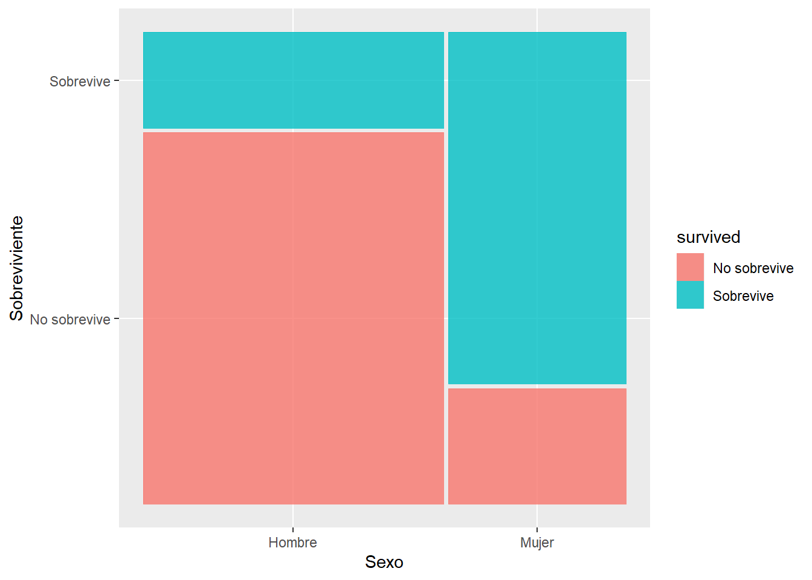
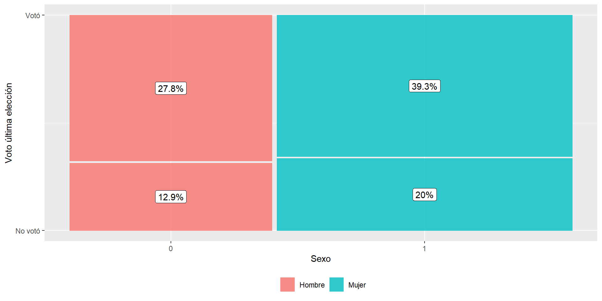
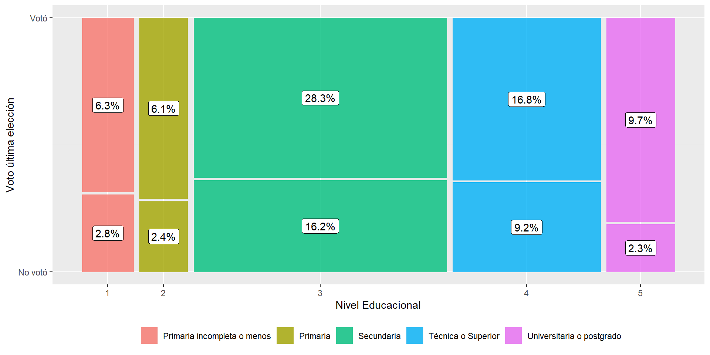

pacman::p_load(dplyr, summarytools, ggmosaic, finalfit)Práctico 07. Regresión logística I
Métodos estadísticos para Ciencias Sociales III
Objetivo
La siguiente práctica tiene el objetivo de introducir a los estudiantes en los modelos de regresión logística, que permite la estimación con una variable dependiente categórica dicotómica. En esta primera parte nos centraremos en conceptos centrales para estos modelos, que son probabilidades, chances (odds) y razón de chances (odds-ratio).
Librerías
Datos
El Titanic fue un transatlántico británico, el mayor barco del mundo al finalizar su construcción, que se hundió en la madrugada del 15 de abril de 1912 durante su viaje inaugural desde Southampton a Nueva York. En el hundimiento del Titanic murieron 619 personas de las 1046 que iban a bordo, lo que convierte a esta tragedia en uno de los mayores naufragios de la historia ocurridos en tiempo de paz. Con esta base realizaremos una serie de ejercicios para determinar la probabilidad de sobrevivir en base al sexo de los tripulantes.
#Cargamos la base de datos desde internet
load(url("https://multivariada.netlify.app/assignment/data/titanic.RData"))
data(Titanic)Explorar datos
A partir de la siguiente tabla se obtienen estadísticos descriptivos que luego serán relevantes para la interpretación de nuestros modelos.
view(dfSummary(tt, headings = FALSE, method = "render"))| No | Variable | Stats / Values | Freqs (% of Valid) | Graph | Valid | Missing | ||||||||||||||||||||||||||||||||||||||||||||||
|---|---|---|---|---|---|---|---|---|---|---|---|---|---|---|---|---|---|---|---|---|---|---|---|---|---|---|---|---|---|---|---|---|---|---|---|---|---|---|---|---|---|---|---|---|---|---|---|---|---|---|---|---|
| 1 | pclass [factor] |
|
|
 |
1046 (100.0%) | 0 (0.0%) | ||||||||||||||||||||||||||||||||||||||||||||||
| 2 | survived [factor] |
|
|
 |
1046 (100.0%) | 0 (0.0%) | ||||||||||||||||||||||||||||||||||||||||||||||
| 3 | sex [factor] |
|
|
 |
1046 (100.0%) | 0 (0.0%) | ||||||||||||||||||||||||||||||||||||||||||||||
| 4 | age [numeric] |
|
98 distinct values |  |
1046 (100.0%) | 0 (0.0%) | ||||||||||||||||||||||||||||||||||||||||||||||
| 5 | sibsp [numeric] |
|
|
 |
1046 (100.0%) | 0 (0.0%) | ||||||||||||||||||||||||||||||||||||||||||||||
| 6 | parch [numeric] |
|
|
 |
1046 (100.0%) | 0 (0.0%) |
Generated by summarytools 1.0.1 (R version 4.3.2)
2025-10-20
Para esta práctica nos centraremos en las variables sex y survived. Como podemos notar la categoría de respuesta de estas variables posee dos niveles (1 y 2), es decir, estamos ante variables dicotómicas.
Con la función ctable del paquete summarytools podemos realizar una tabla de contingencia donde se señala la proporción de sobrevivientes según sexo
ctable(tt$sex, tt$survived)Cross-Tabulation, Row Proportions
sex * survived
Data Frame: tt| survived | ||||||||||||
|---|---|---|---|---|---|---|---|---|---|---|---|---|
| sex | No sobrevive | Sobrevive | Total | |||||||||
| Hombre | 523 | ( | 79.5% | ) | 135 | ( | 20.5% | ) | 658 | ( | 100.0% | ) |
| Mujer | 96 | ( | 24.7% | ) | 292 | ( | 75.3% | ) | 388 | ( | 100.0% | ) |
| Total | 619 | ( | 59.2% | ) | 427 | ( | 40.8% | ) | 1046 | ( | 100.0% | ) |
Generated by summarytools 1.0.1 (R version 4.3.2)
2025-10-20
La tabla muestra que la mayoría de los tripulantes no sobrevivió (619, 59,2% no sobreviven, mientras que 427, 40.8% si sobreviven). A su vez, solo un 20.5% de los hombres sobrevive, contrastando con un 75% para las mujeres.
Una forma gráfica de verlo es por medio del paquete ggmosaic que con su función geom_mosaic permite construir visualizaciones para datos categóricos. El mosaico general corresponde al total de tripulantes del titanic. Como podrán notar, hay más hombres tripulantes que mujeres, por lo que las barras para hombres son mas anchas. Luego, gracias al comando fill del geom_mosaic podemos distinguir en hombres y mujeres la proporción de cuantos sobrevivieron y cuantos no sobrevivieron.
p1 <- ggplot(data = tt) +
geom_mosaic(aes(product(survived, sex), fill= survived)) + labs(y = "Sobreviviente", x = "Sexo")
p1Warning: The `scale_name` argument of `continuous_scale()` is deprecated as of ggplot2
3.5.0.Warning: The `trans` argument of `continuous_scale()` is deprecated as of ggplot2 3.5.0.
ℹ Please use the `transform` argument instead.Warning: `unite_()` was deprecated in tidyr 1.2.0.
ℹ Please use `unite()` instead.
ℹ The deprecated feature was likely used in the ggmosaic package.
Please report the issue at <https://github.com/haleyjeppson/ggmosaic>.
Conceptos centrales
Probabilidades
Una probabilidad es la posibilidad de ocurrencia de un evento de interés, usando como referencia todos los eventos. Por ejemplo, la probabilidad de “ser sobreviviente en el titanic” se calcula en relación a todos los tripulantes del titanic.
En primera instancia, podríamos decir que del total de pasajeros, un 40.8% de ellos sobrevive, es decir, la probabilidad de sobrevivir es de 0.408
\[Probabilidades_{sobrevivientes} = \frac{427}{1046} = 0.408\] Mientras que un 59.2% de los tripulantes no sobrevive, es decir, la probabilidad de no sobrevivir es de 0.592
\[Probabilidades_{sobrevivientes} = \frac{619}{1046} = 0.592\]
En R se realiza a través de la función prop.table
prop.table(table(tt$survived))
No sobrevive Sobrevive
0.5917782 0.4082218 Odds
Una forma alternativa de representar una probabilidad son las chances o odds que se definen como la división entre el número de ocurrencias (\(\pi\)) y el numero de “no ocurrencias” (\(1-\pi\)).
\[Odd = \frac{\pi}{1-\pi}\]
Si seguimos el ejemplo del Titanic
\[Odds = \frac{Sobrevivientes}{No{Sobrevivientes}}\]
La función addmargins nos entrega las frecuencias marginales y absolutas para columnas (sexo) y filas (sobrevivencia)
addmargins(table(tt$survived,tt$sex))
Hombre Mujer Sum
No sobrevive 523 96 619
Sobrevive 135 292 427
Sum 658 388 1046\[Odds = \frac{Sobrevivientes}{No{Sobrevivientes}}=\frac{427}{619}=0.68\]
Si hacemos el cálculo de los odds obtenemos 0.68 (427/619), es decir, hay 0.68 sobrevivientes por cada no sobreviviente. Aunque parezca poco “lógico” hablar de 0.68 sobrevivientes, esto indica que la relación entre sobrevivientes y no sobrevivientes no es 1:1 y de hecho existen más chances de morir que de sobrevivir.
Otra forma de leer este dato es decir que por cada 100 no sobrevivientes, hay 68 sobrevivientes.
Podríamos también calcular el odds de sobrevivencia de hombres y mujeres
\[Odds{hombres} = \frac{135}{523} = 0.258\] \[Odds{mujeres} = \frac{292}{96} = 3.04\]
Para los hombres, hay más chances de no sobrevivir que de sobrevivir (odds < 1), mientras que para mujeres hay más chances de sobrevivir que de no sobrevivir (odds > 1)
Propiedades de Odds
- Odds menores que 1, indican una chance negativa
- Odds mayores que 1, indican una chance positiva
En R podemos realizar este calculo directamente a través de las probabilidades marginales para cada sexo que entrega prop.table.El número 2 indica que las proporciones están calculadas por columna, es decir, las probabilidades indicadas se calculan considerando como total cada sexo.
prop.table(table(tt$survived,tt$sex),2)
Hombre Mujer
No sobrevive 0.7948328 0.2474227
Sobrevive 0.2051672 0.7525773Odds Ratio (OR)
Ahora bien, con los datos hasta ahí podriamos llegar a la conclusión de que las mujeres tienen más chances de sobrevivir que los hombres. Pero, ¿cuánto más sobreviven las mujeres que los hombres?
Esta pregunta implica la asociación entre sobrevivencia y sexo y ya no solo hablar de las chances de sobrevivencia de cada sexo por separado. Para hacer esa relación se requiere calcular los odds ratio o razón de chances.
\[Odds Ratio = \frac{Odds_{mujeres}}{Odds_{hombres}} = \frac{3.04}{0.258} = 11.78\]
El resultado que obtenemos se lee de la siguiente manera: las chances de sobrevivir de las mujeres es 11.78 veces más grande que la de los hombres.
¿Qué ganamos con el odds-ratio?
El OR permite expresar en un número la relación entre variables categóricas, o al menos cuando una de ellas es categórica. De esta forma, es una medida de asociación similar al sentido del \(\beta\) de regresión, y que nos permitirá aprovechar las ventajas del modelo de regresión (principalmente el control estadístico) cuando tenemos variables dependientes categóricas.
Sin embargo, los odds también poseen algunas limitaciones por resolver y que requieren su transformación para ajustarlos al modelo de regresión. Esta transformación es el logaritmo de los odds o logit (de ahí el nombre de regresión logística)
Con datos reales
La siguiente práctica tiene el objetivo de introducir a los estudiantes en los modelos de regresión logística multivariada. Al igual que en la práctica anterior emplearemos una variable dependiente dicotómica, de modo tal que veremos de qué una serie de variables independientes nos permiten predecir la ocurrencia de un determinado evento. Para ello, utilizaremos la base de datos de la Encuesta sobre Conflicto y Cohesion Social en Chile 2014 para analizar los determinantes de la participación en las elecciones del año 2013.
Librerías
pacman::p_load(dplyr, summarytools, ggmosaic, sjPlot, texreg)Datos
La Encuesta sobre Conflicto y Cohesión Social en Chile (ENACOES 2014) es el primer estudio de este tipo que busca mapear los conflictos y la cohesión en el país. Su objetivo fundamental es aportar a la comprensión de las creencias, actitudes y percepciones de los chilenos hacia las distintas dimensiones de la convivencia y el conflicto. La población objetivo son hombres y mujeres entre 15 y 75 años de edad con un alcance nacional, donde se obtuvo una muestra final de 2025 casos. Para el caso de este ejercicio, se trabajará con una submuestra de 1974 individuos que estuvieron habilitados para votar en el año 2013.
#Cargamos la base de datos desde internet
load(url("https://multivariada.netlify.app/assignment/data/enacoes.RData"))Explorar datos
A partir de la siguiente tabla se obtienen estadísticos descriptivos que luego serán relevantes para la interpretación de nuestros modelos.
view(dfSummary(enacoes, headings = FALSE, method = "render"))| No | Variable | Label | Stats / Values | Freqs (% of Valid) | Graph | Valid | Missing | |||||||||||||||||||||||||
|---|---|---|---|---|---|---|---|---|---|---|---|---|---|---|---|---|---|---|---|---|---|---|---|---|---|---|---|---|---|---|---|---|
| 1 | voto [factor] | Votó en última elección |
|
|
 |
1974 (100.0%) | 0 (0.0%) | |||||||||||||||||||||||||
| 2 | sexo [factor] | Sexo entrevistado |
|
|
 |
1974 (100.0%) | 0 (0.0%) | |||||||||||||||||||||||||
| 3 | edad [numeric] | Edad entrevistado |
|
58 distinct values |  |
1974 (100.0%) | 0 (0.0%) | |||||||||||||||||||||||||
| 4 | educ [factor] | Nivel Educacional |
|
|
 |
1974 (100.0%) | 0 (0.0%) |
Generated by summarytools 1.0.1 (R version 4.3.2)
2025-10-20
Lo primero que debemos observar es la distribución de la participación electoral, donde 0 son quienes nos votaron en la última elección y 1 los que sí lo hicieron. En este caso, vemos que un 67,1% (1325) señaló haber participado en la última elección, en contraste de un 32,9% que no lo hizo. En este sentido, vemos que existen aproximadamente 2/3 de los individuos de la muestra que sí acudieron a votar, por tanto ahora vamos a revisar cómo se distribuyen estas respuestas según el sexo y el nivel educacional de el entrevistado.
En primera instancia nos centraremos en las variables sexo y voto. Como podemos notar la categoría de respuesta de estas variables son 0 y 1, es decir, estamos ante variables dicotómicas.
En segunda instancia, observaremos la distribución de participación electoral según el Nivel educacional (educ), la cual en este caso hemos recodificado en cinco niveles educacionales.
Con la función tab_xtab del paquete sjPlot podemos realizar una tabla de contingencia donde se señala la proporción de la participación electoral según sexo.
tab_xtab(var.row = enacoes$voto,enacoes$sexo,show.cell.prc = T,show.summary = F)| Votó en última elección |
Sexo entrevistado | Total | |
| Hombre | Mujer | ||
| No votó | 254 12.9 % |
395 20 % |
649 32.9 % |
| Votó | 549 27.8 % |
776 39.3 % |
1325 67.1 % |
| Total | 803 40.7 % |
1171 59.3 % |
1974 100 % |
Teniendo en cuenta que existen 2/3 (67,1%) de las personas en Chile que han declarado haber votado en la última elección, la tabla anterior nos muestra que del total de personas que votan, las participación electoral es mayor en las mujeres, lo cual equivale a un 39,3% del total en desmedro del 27,8% que representado por los hombres.
tab_xtab(var.row = enacoes$voto,enacoes$educ,
show.cell.prc = T,show.summary = F, encoding = " ")| Votó en última elección |
Nivel Educacional | Total | ||||
| Primaria incompleta o menos |
Primaria | Secundaria | Técnica Superior | Universitaria o postgrado |
||
| No votó | 55 2.8 % |
47 2.4 % |
320 16.2 % |
182 9.2 % |
45 2.3 % |
649 32.9 % |
| Votó | 124 6.3 % |
120 6.1 % |
558 28.3 % |
331 16.8 % |
192 9.7 % |
1325 67.2 % |
| Total | 179 9.1 % |
167 8.5 % |
878 44.5 % |
513 26 % |
237 12 % |
1974 100 % |
Adicionalmente, la tabla anterior nos muestra la distribución de la participación electoral según cinco categorías de nivel educacional. Como podemos observar, la participación electoral se concentra en los niveles educacionales secundario con un 28,3% y superior técnica y universitaria, con un 16,8% y 9,7% respectivamente. Por otro lado, podemos observar una baja participación electoral de los grupos con nivel educacional más bajo, donde las personas con Primaria incompleta o menos representan un 6,3% y aquellas con Primaria completa son el 6,1%.
Al igual que la práctica anterior, podemos representar gráficamente estas distribuciones a través del paquete ggmosaic que con su función geom_mosaic. A continuación se presentan dos gráficos para la participación electoral según sexo y nivel educacional.
ggplot(enacoes) +
geom_mosaic(aes(x=product(voto, sexo), fill=sexo)) +
geom_label(data = layer_data(last_plot(), 1),
aes(x = (xmin + xmax)/ 2,
y = (ymin + ymax)/ 2,
label = paste0(round((.wt/sum(.wt))*100,1),"%"))) +
labs(y = "Voto última elección",
x = "Sexo") +
scale_fill_discrete(name = "",
labels = c("Hombre","Mujer"))+
scale_y_continuous(breaks = c(0,1),
labels = c("No votó","Votó")) +
theme(legend.position="bottom")
ggplot(enacoes) +
geom_mosaic(aes(x=product(voto, educ), fill=educ)) +
geom_label(data = layer_data(last_plot(), 1),
aes(x = (xmin + xmax)/2,
y = (ymin + ymax)/2,
label = paste0(round((.wt/sum(.wt))*100,1),"%"))) +
labs(y = "Voto última elección",
x = "Nivel Educacional") +
scale_fill_discrete(name = "",
labels = c("Primaria incompleta o menos",
"Primaria",
"Secundaria", "Técnica o Superior",
"Universitaria o postgrado"))+
scale_y_continuous(breaks = c(0,1),labels = c("No votó","Votó")) +
theme(legend.position="bottom")

Estimación
La función pincipal para la estimación de modelos de regresión logística es glm(), especificando el argumento family="binomial", lo cual le indica a la función que estamos prediciendo una variable binaria. Al igual que con lm(), debemos especificar los predictores y la base de datos a emplear. A continuación, estimaremos una serie de modelos de regresión logística que nos permitan determinar de qué manera el sexo, la edad y el nivel educacional de las personas pueden predecir la participación electoral.
m00 <- glm(voto~1,data = enacoes,family = "binomial")
m01 <- glm(voto~sexo,data = enacoes,family = "binomial")
m02 <- glm(voto~edad,data = enacoes,family = "binomial")
m03 <- glm(voto~sexo+edad+educ,data = enacoes,family = "binomial")Tabla de regresión
| Modelo 0 | Modelo 1 | Modelo 2 | Modelo 3 | |
|---|---|---|---|---|
| Intercepto | 0.71*** | 0.77*** | -1.07*** | -2.04*** |
| (0.05) | (0.08) | (0.15) | (0.29) | |
| Sexo (Mujer=1) | -0.10 | -0.02 | ||
| (0.10) | (0.10) | |||
| Edad | 0.04*** | 0.05*** | ||
| (0.00) | (0.00) | |||
| Primaria | 0.34 | |||
| (0.25) | ||||
| Secundaria | 0.47* | |||
| (0.19) | ||||
| Técnica o Superior | 0.88*** | |||
| (0.22) | ||||
| Universitaria o postgrado | 1.53*** | |||
| (0.25) | ||||
| AIC | 2502.30 | 2503.34 | 2334.32 | 2290.54 |
| Log Likelihood | -1250.15 | -1249.67 | -1165.16 | -1138.27 |
| Deviance | 2500.30 | 2499.34 | 2330.32 | 2276.54 |
| Num. obs. | 1974 | 1974 | 1974 | 1974 |
|
\(^{***}\) p < 0.001; \(^{**}\) p < 0.01; \(^{*}\) p < 0.05 Errores estándar entre paréntesis |
||||